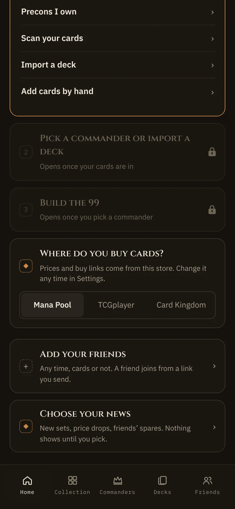
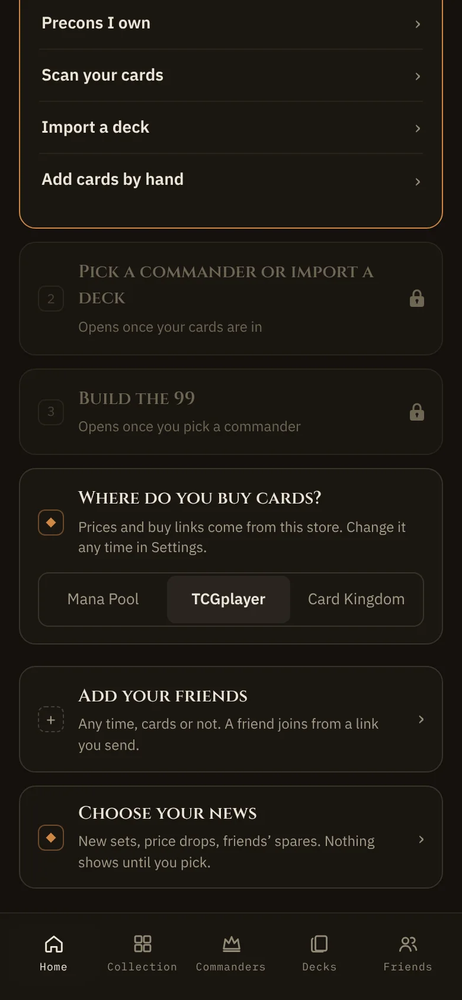
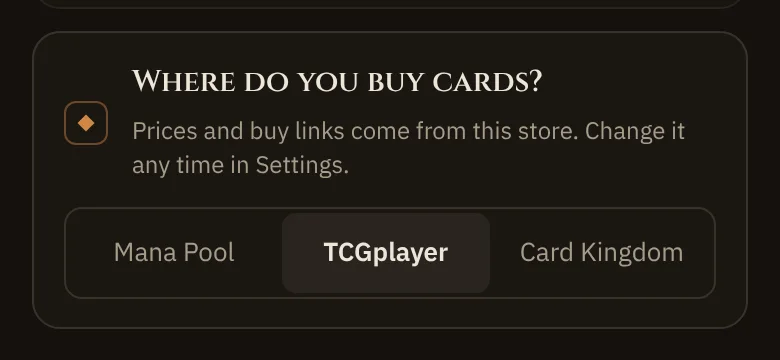
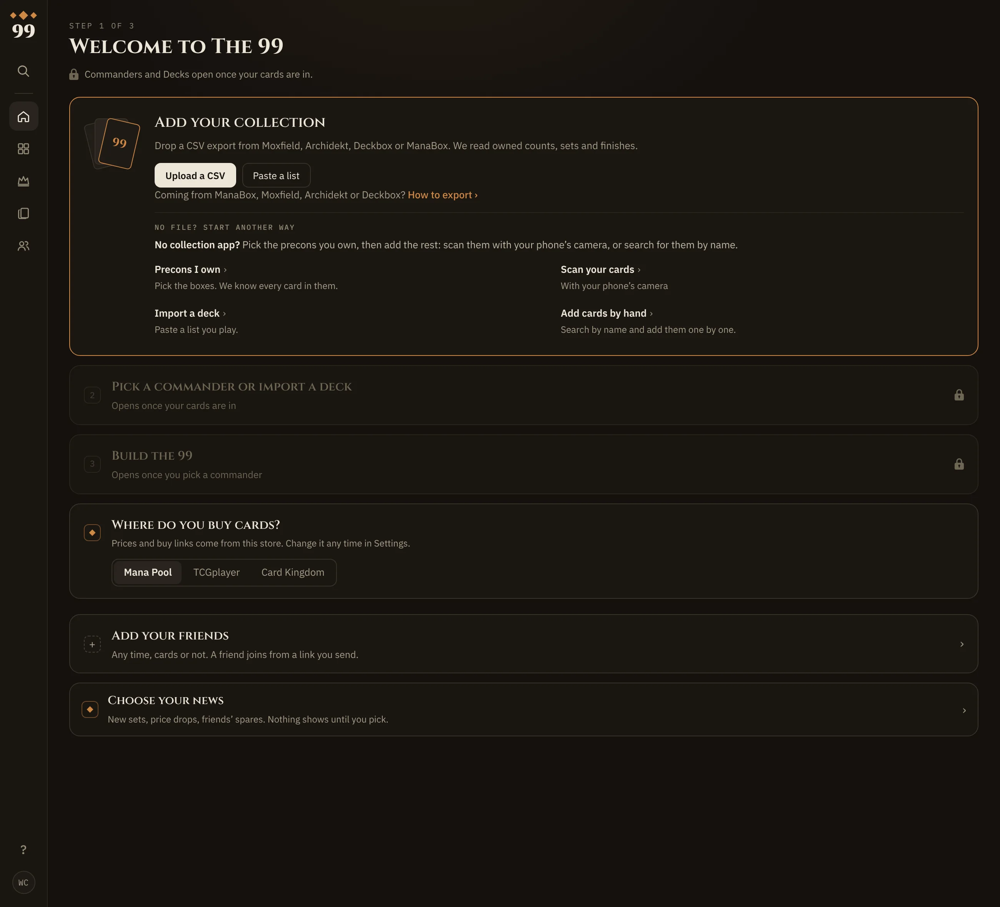

An unnumbered checklist row after the locked steps and before Add your friends, in the Friends row’s live box. The three stores are the shipped segmented switch (radio, compact, full width on the phone); Mana Pool is already chosen, so a player who ignores the row has the default. A press saves at once with the Settings write; a failed save puts the old store back and raises the same toast. Once cards are in, the checklist goes and Settings and Change store remain. A fourth store adds a segment; past what 390 holds, the switch scrolls (its shipped option).

O1 · Mana Pool, untouched
The row as a new player first meets it, scrolled under step 3.

O2 · TCGplayer picked
The fill moves at once; every price from here on is TCGplayer’s.

O3 · The row alone
Title, line, switch. The line names Settings so the choice never feels final.

O4 · Desktop
The switch sits under the text at its content width.